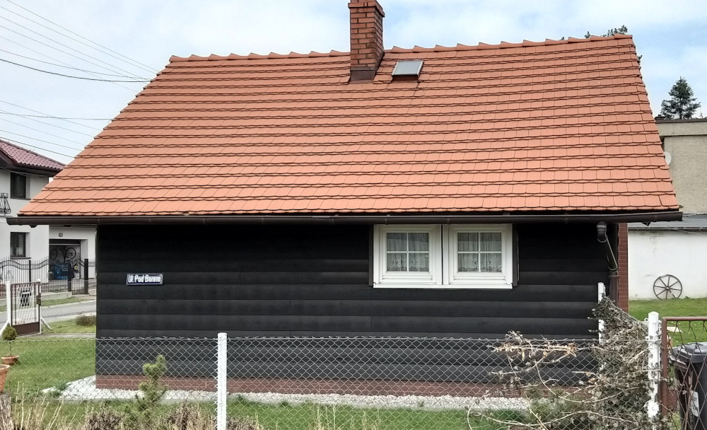
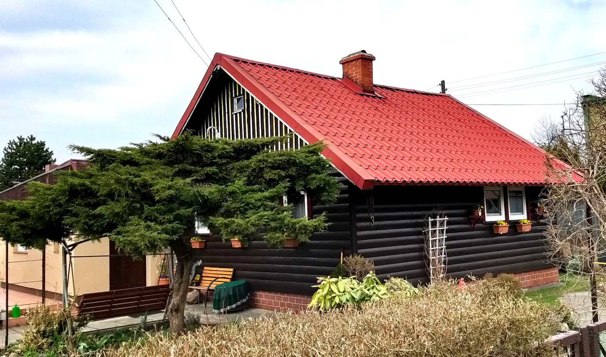
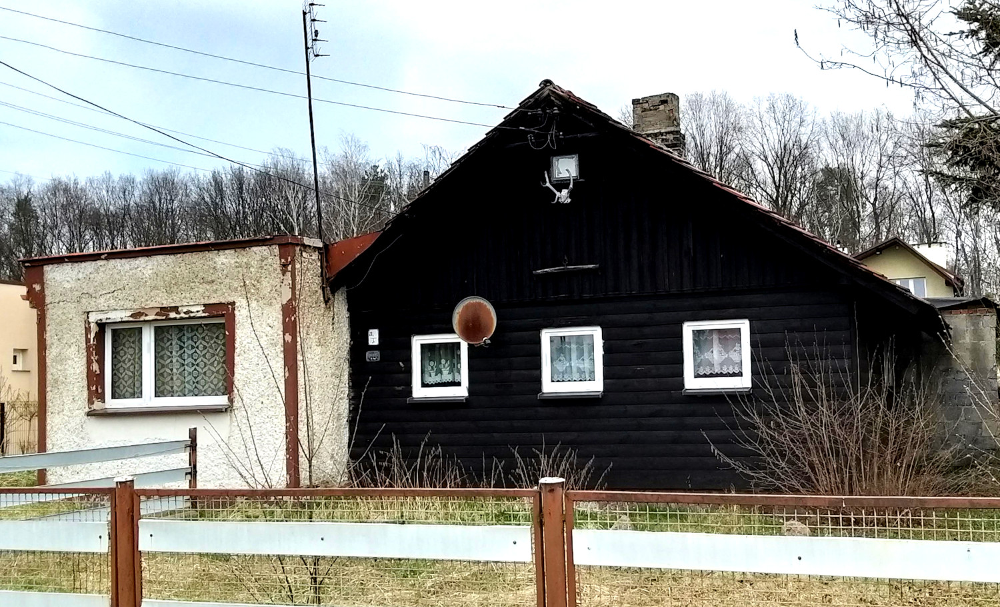
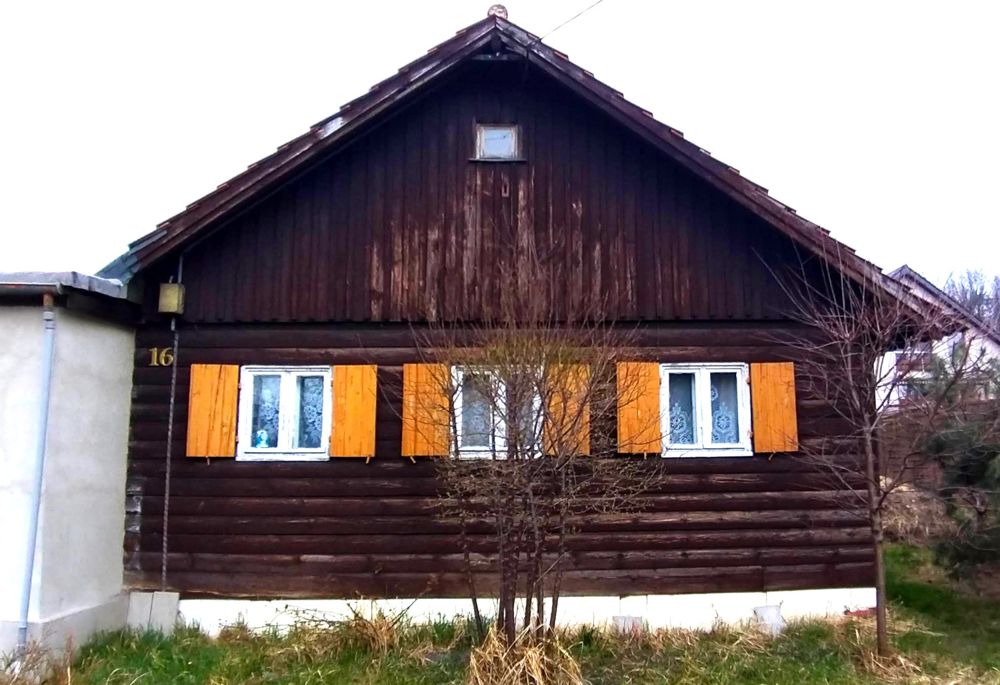

Osiedle domków fińskich
Gliwickie domki fińskie znajdują się w pobliżu ulicy Toszeckiej, w bezpośrednim sąsiedztwie Lasu Łabędzkiego. Administracyjnie położone są w dzielnicy Kopernika. Zlokalizowane są wzdłuż ulic: Świerkowej, Las Łabędzki, Pod Borem. Po całej kolonii zostało dziś tylko kilkanaście obiektów. Wpisano je do gminnej ewidencji zabytków, od 2010 roku podlegają ochronie na mocy Miejscowego Planu Zagospodarowania Przestrzennego. Domki fińskie to rodzaj drewnianego domu jednorodzinnego. Ich podstawową zaletą był niski koszt budowy i czas stawiania konstrukcji. Były odpowiedzią na powojenny głód mieszkaniowy. Miały przetrwać 20 lat, do dziś stoją w wielu miejscach w Polsce, ale przede wszystkim na górnym śląsku. Choć domki noszą nazwę „fińskich” to tak naprawdę wymyślono je w Szwecji. W latach 30. zaczęto tam budować drewniane domy z gotowych prefabrykowanych elementów. Finowie podchwycili pomysł, udoskonalili te konstrukcje i zaczęli ich budowę na masową skalę. Aby postawić taki dom wystarczyło trzech pracowników i dwa tygodnie pracy.
   